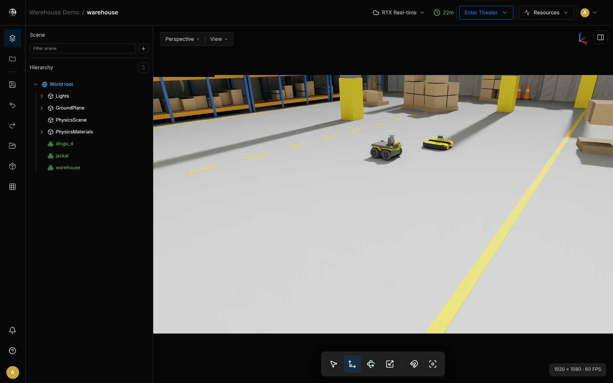

Quick Start¶
Create a warehouse World, view its simulation in Theater, then stop and deactivate it. This first exercise introduces the complete World lifecycle. Robot driving is a separate task that requires a configured Station and an available controller app.
Before You Start¶
- Sign in to Sodero Cloud with access to create a project and edit its files.
- Check the workspace's credits and active-file allowance in Billing & Usage.
- Download jackal_warehouse.zip, the example scene with a Jackal and a Dingo. Keep the ZIP intact. It includes the accompanying Clearpath license notice.
Credits: an active World uses credits until you deactivate it. Studio and Theater sessions in RTX Real-time use credits too. Check your plan's rates before opening them (Credits and Usage).
Step 1: Create the Project and World¶
- In Projects, click + Project.
- Enter
Warehouse Demo, keep Restricted, and click Create. - In the project, click New file, choose Robot World, and click Next.
- Enter
warehouseas the File Name, then click Create.
The World appears as Inactive. Its Studio link opens the editor.
Step 2: Import and Save the Scene¶
- Click Studio on the World row. Choose RTX Real-time or WebGPU, then click Open Cosmic Studio.
- Open the logo menu and choose World › Replace scene….
- On This PC, select
jackal_warehouse.zip, click Replace, and confirm replacement. - Check that Hierarchy contains the warehouse and robots. If the old default scene remains after the replacement confirmation, reload Studio.
- Click Save now and wait for Saved just now.


Choose Back to Sodero Cloud from the logo menu to close Studio. Keep the portal tab open while using the editor.
Step 3: Activate the World¶
On the project page, set the World's Activation to Active. Wait until Activating changes to Active. Activation prepares the environment; it does not start the simulation.
Step 4: View and Run the Simulation¶
- Click Theater, choose a rendering mode, and click Open Cosmic Theater.
- Wait for Ready. If the view fails to load, use Retry; repeated failures should be reported through Help.
- On the project page, set the World's Running state to Running. Alternatively, the editor who has control in Theater can use Start Theater.
- Select jackal in Scene assets; double-click the row to bring the camera to it.
Check that the scene loads and the robots remain on the ground. Physics RTF near 1.00 means the simulation keeps up with elapsed time; FPS describes display updates. These are different measurements. A robot does not start driving simply because the World is running.
Step 5: Stop and End the Session¶
- Set the World's Running state to Stopped. Stopping resets its pose and clock; it is not a pause that preserves progress.
- Set Activation to Inactive and wait for deactivation to finish.
- Close Studio and Theater views you no longer need. In Billing & Usage › Recent runs, check for remaining active sessions.
Stopping a World leaves its environment active and using credits. Deactivating a World does not deactivate separate Robot Systems. End each resource that you started.
Next: Connect a Robot System¶
Use the following sequence when compatible controller apps and robot documents are available:
- Create a Robot System in the same project.
- Check its Store apps, then add and connect nodes.
- Go live without starting the nodes. Upload and confirm the robot documents.
- Confirm the robot name and actuator mapping, run the World, and start the nodes.
- If the running controller provides an operator UI, follow Strider, Motion Studio, or Articulation.
Use documents supplied or exported for the Station version you are using. Check Compatibility before moving files from Stellar X.